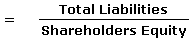

A measure of a company's financial leverage calculated by dividing its total liabilities by stockholders' equity. It indicates what proportion of equity and debt the company is using to finance its assets.
Note: Sometimes only interest-bearing, long-term debt is used instead of total liabilities in the calculation.
Also known as the Personal Debt/Equity Ratio, this ratio can be applied to personal financial statements as well as corporate ones.
A high debt/equity ratio generally means that a company has been aggressive in financing its growth with debt. This can result in volatile earnings as a result of the additional interest expense.
If a lot of debt is used to finance increased operations (high debt to equity), the company could potentially generate more earnings than it would have without this outside financing. If this were to increase earnings by a greater amount than the debt cost (interest), then the shareholders benefit as more earnings are being spread among the same amount of shareholders. However, the cost of this debt financing may outweigh the return that the company generates on the debt through investment and business activities and become too much for the company to handle. This can lead to bankruptcy, which would leave shareholders with nothing.
The debt/equity ratio also depends on the industry in which the company operates. For example, capital-intensive industries such as auto manufacturing tend to have a debt/equity ratio above 2, while personal computer companies have a debt/equity of under 0.5.
{kind=link}